| 기간 | 2026.10.27 – 2026.11.06 |
| 작성 | 이다교 (github.com/lee-da-gyo) |
| 저장소 | github.com/lee-da-gyo/ai-project-01-pill-detection |
| 환경 | Python 3.14 · PyTorch 2.11 · Ultralytics 8.4 · RTX 3060 12GB |
학습 이미지는 232장, 약은 56종이며 절반 이상이 10개 미만의 박스만 가진 롱테일 데이터다. 같은 알약 조합을 각도만 바꿔 최대 세 번(조합당 1~3장) 찍은 구조라, 이미지 단위로 나누면 검증 점수가 부풀려진다. 이 프로젝트는 모델을 바꾸기 전에 "정직하게 재는 법"을 먼저 만들었다.
헬스케어 스타트업 헬스잇(Health Eat)은 사용자가 복용 중인 약을 촬영하면 어떤 약인지 자동으로 알려 주는 기능을 만들고자 한다. 약을 정확히 알아보면 함께 먹으면 안 되는 약 안내, 복약 기록 같은 서비스로 확장할 수 있다. 이 프로젝트는 그 첫 단계인 인식 모델을 만든다.
| 항목 | 내용 |
|---|---|
| 과제 유형 | 객체 검출 (Object Detection): 알약마다 약 종류(클래스)와 바운딩 박스를 함께 예측 |
| 입력 | 단색 배경 위에 알약 3~4개가 놓인 사진 (976 × 1280) |
| 데이터 | 학습 232장 (박스 771개, 56종) · 테스트 842장 (정답 비공개, Kaggle로 채점) |
| 제약 | AI Hub 경구약제 이미지 데이터[12] 중 TL_2_조합.zip과 그 원천 데이터 TS_2_조합만 사용 금지 (그 밖의 AI Hub 데이터는 허용, 이 프로젝트에서는 쓰지 않았다) · 테스트에 학습에 없는 클래스 존재 (대회 안내) · Kaggle 하루 10회 제출 |
대회 페이지의 평가 지표 표기는 mAP@[0.75:0.95]다. 이 보고서는 이 표기를 COCO 관례(0.05 간격 5개, configs/evaluation.yaml)로 해석한 내부 대리지표(이하 대리지표)를 계산한다. 주최 측 평가 코드 또는 공식 점수와의 동등성은 확인하지 못했다. 약 이름과 함께 박스를 얼마나 정확히 그렸는지를 더 엄격하게 본다.
실험 대부분은 대회 페이지의 표기를 확인하기 전에 COCO 표준 mAP@[.5:.95](이하 mAP50-95)로 비교했으므로, 이 보고서의 실험 표는 mAP50-95를 쓴다. 대회 페이지를 프로젝트 후반에야 확인한 것은 실수다. 확인한 뒤 학습 없이 저장된 예측으로 최종 결정들을 대리지표로 다시 평가했고, 그 결과 WBF의 IoU 하나가 바뀌었다(6.6절). 그 차이(0.0007)는 작아서 주최 측 해석이 다르면 선택이 달라질 수 있다.
검증에는 pycocotools[3]로 직접 계산한 COCO mAP[2]를 쓴다. 베이스라인에서 Ultralytics 내장 평가(0.834)와 직접 구현(0.835)이 일치함을 확인했고,
덕분에 앙상블·2단계 모델처럼 Ultralytics 밖에서 만든 예측도 같은 기준으로 비교할 수 있었다.
제출 파일은 대회 안내의 8개 열(annotation_id, image_id, category_id, bbox_x, bbox_y, bbox_w, bbox_h, score)과 일치함을 확인했다.
EDA의 목적은 그래프를 많이 그리는 것이 아니라 데이터의 특성을 설계 결정으로 바꾸는 것이다. 발견 6가지를 각각 하나의 결정으로 연결했다.
| 발견 | 근거 | 결정 |
|---|---|---|
| 데이터가 매우 적다 | 학습 232장으로 테스트 842장을 예측 | COCO 사전학습 YOLO 파인튜닝 |
| 심한 클래스 불균형 | 최대 157개 vs 최소 3개 (약 50배). 56종 중 29종이 박스 10개 미만 | 클래스별 AP 추적, 희귀 약 보강 시도 (Copy-Paste) |
| 사실상 1장짜리 클래스 | 17종은 같은 장면을 각도만 바꾼 3장이 전부 | 증강으로 맥락 다양화, 성능 측정의 한계로 명시 |
| 같은 조합을 여러 각도로 | 114개 조합을 최대 세 각도(70° / 75° / 90°)로 촬영. 실제 보유 수는 3장 40조합, 2장 38조합, 1장 36조합 | 2~3장인 78개 조합은 거의 같은 장면이 반복된다 → 이미지 단위 분할은 누수 → 조합 단위 분할 (4장) |
| 고정된 배치 위치 | 박스 중심이 몇 개 슬롯에 몰려 있음 | 이동·모자이크 증강으로 위치 편향 방지 |
| Train/Test 분포 차이 | Test가 약간 어둡고(밝기 131.5 → 125.9) 대비가 큼(23.6 → 26.5) | 밝기·대비 증강, CLAHE 전처리 비교 (6.5절) |
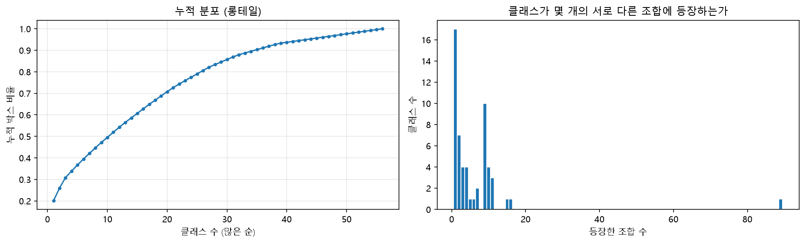
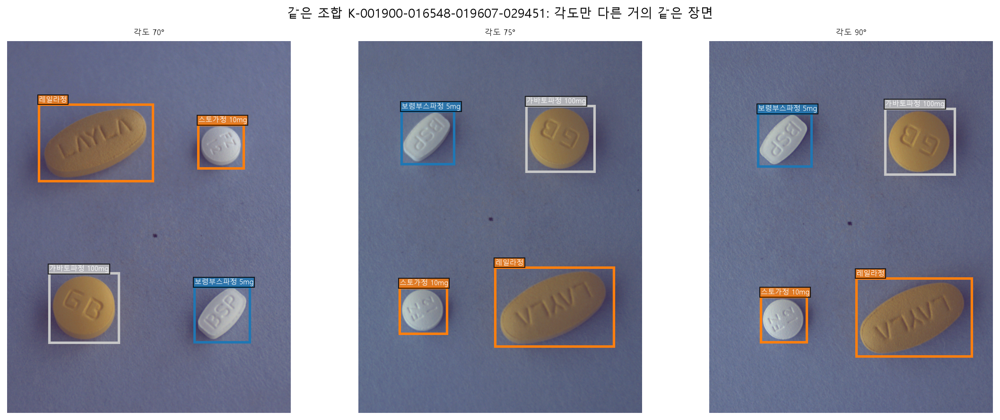
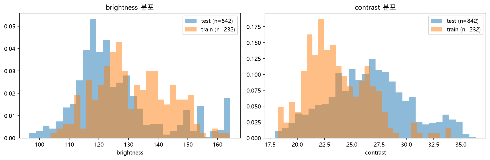
라벨이 틀렸는지 확인하려면 라벨과 독립적인 기준이 필요하다. 배경이 단색에 가깝다는 EDA 결과를 이용해, 배경 차분(Lab 색 거리 + Otsu 이진화)으로 알약 영역을 분할하고 라벨과 대조했다. 또 하나의 기준은 파일명이다. 파일명에는 조합의 약 코드가 들어 있고, 232장 중 224장에서 라벨의 약 목록과 정확히 일치했다 (나머지 8장은 모두 "라벨 하나가 빠진" 경우).
| 오류 유형 | 탐지 규칙 | 수정 | 건수 |
|---|---|---|---|
| 범위 밖 박스 | 좌표가 이미지 밖 (x = 6567) | 숫자 하나를 뺀 후보 중 라벨 없는 알약과 가장 잘 맞는 값 → x = 567 | 1 |
| 엉뚱한 위치 | 박스 안이 배경 + 겹치지 않는 같은 크기의 라벨 없는 알약 존재 | 그 알약 위치로 이동 | 1 |
| 누락 박스 | 파일명의 약 코드 중 라벨 없는 것 1개 + 라벨 없는 알약 1개 | 해당 코드로 박스 추가 (같은 조합 다른 각도 사진과 생김새 대조) | 8 |
| 다른 약끼리 같은 좌표 * | 한 이미지에서 다른 약 박스 쌍의 IoU ≥ 0.9 (후보만 자동 탐지) | 다른 각도 사진으로 확인한 틀린 라벨을 라벨 없는 알약으로 이동 | 3 |
| 라벨 교환 * | OOF 예측이 정답과 신뢰도 0.9 이상으로 다르게 답함 (모델 보조 사후 감사) | 다른 각도 사진으로 확인한 두 박스의 약 코드 교환 | 1장 (2박스) |
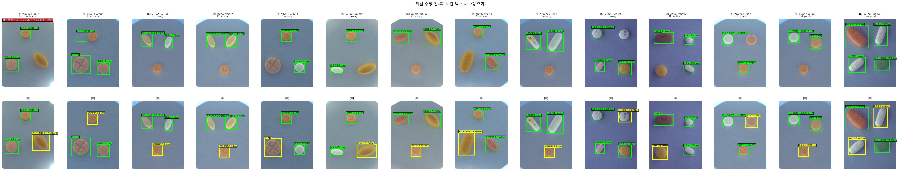
실패에서 배운 점 – 처음 만든 "빈 박스 이동" 규칙은 6건을 고쳤지만 그중 5건이 오탐이었다. 반투명 캡슐과 파란 알약은 분할이 잘 되지 않아 박스가 비어 보였던 것이다.
"원래 박스와 겹치지 않고 크기가 비슷한 알약이 따로 있다"는 조건을 더해 진짜 오류 1건만 남겼다. 자동 규칙의 결과 10건은 모두 이미지로 육안 검수했다 (docs/LABEL_REVIEW.md).
처음 정제가 놓친 오류 – 처음 무결성 검사는 "같은 약 박스의 중복"만 확인해, 다른 약 두 개가 같은 좌표에 라벨된 경우를 통과시켰다. 8장의 오류 분석에서 "학습한 약을 신뢰도 0.96~0.98로 틀렸다"고 나온 사례를 원본과 대조하다가, 실제로는 모델이 맞고 라벨이 틀린 4장을 찾았다. 4장을 고친 뒤 5-Fold와 최종 모델을 모두 다시 학습했고, 이 보고서의 5-Fold·OOF·제출 수치는 수정된 라벨 기준이다. 모델 예측으로 찾은 후보는 모델이 같이 틀린 오류를 놓칠 수 있어 탐지 재현율은 알 수 없다.
최종 무결성 검사 (코드로 자동 확인): 모든 이미지에서 파일명의 약 목록 = 라벨의 약 목록 · 범위 밖·크기 0 박스 0 · 같은 약 중복 0 · 다른 약끼리 같은 좌표(IoU ≥ 0.9) 0 · YOLO 라벨 → 픽셀 좌표 왕복 오차 < 0.001px.
같은 조합의 다른 각도 사진이 학습과 검증에 나뉘어 들어가면, 모델은 거의 같은 장면을 다시 맞히는 셈이 되어 점수가 부풀려진다. 이 프로젝트에서 가장 중요한 설계는 모델이 아니라 이 누수를 막는 분할이었다.
| Fold | 검증 이미지 | 검증 조합 | 검증 박스 | 학습에 없는 약 | 베이스라인 mAP50-95 |
|---|---|---|---|---|---|
| 0 | 47 | 23 | 156 | 5 | 0.836 |
| 1 | 46 | 22 | 153 | 3 | 0.900 |
| 2 | 46 | 23 | 150 | 1 | 0.936 |
| 3 | 46 | 22 | 153 | 7 | 0.763 |
| 4 | 47 | 24 | 159 | 3 | 0.879 |
조합 단위로 나누면 한 조합에만 있는 약은 검증될 때 반드시 학습에 없다. 56종 중 19종이 한 fold에만 있어, 5개 fold의 검증 예측을 합친 OOF(out-of-fold) mAP의 상한은 37/56 = 0.661이다. 따라서 56종 OOF는 모델보다 분할 구조에 좌우된다.
비교 지표의 결정 – 모델·앙상블은 2개 이상 fold에 있는 37종만으로 다시 잰 OOF(이하 37종 조건부 OOF)로 비교한다. 어려운 희귀 19종을 정답·예측 양쪽에서 뺀 값이므로 같은 조건에서 모델을 비교하는 진단값이며, 56종 Kaggle 점수의 추정치가 아니다. 56종을 모두 학습하는 최종 모델에서 희귀 19종이 실제로 얼마나 맞을지는 이 데이터로는 잴 수 없다.
fold 하나(독립 조합 23개)로는 0.005 이하의 차이를 구분할 수 없다. 그래서 fold 0에서 빠르게 탐색하고, 최종 후보는 5-Fold로 다시 비교하는 2단계 절차를 썼다.
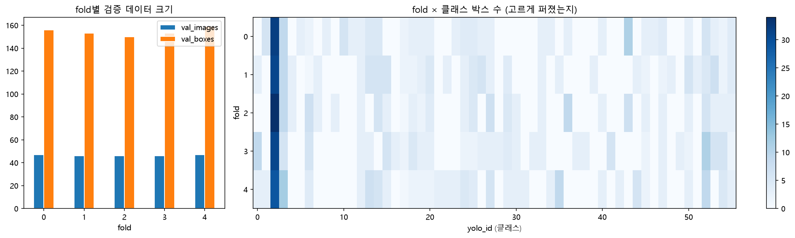
데이터가 232장뿐이라 처음부터 학습하는 모델은 맞지 않는다. COCO[2]로 사전학습된 YOLO11(Ultralytics)[1]을 파인튜닝했다. 한 단계로 위치와 클래스를 함께 예측해 빠르고, 크기(n / s / m)를 바꿔 용량을 비교하기 쉽다. 약 이름만 따로 판별하는 2단계 구조를 위해서는 분류기 3종(VGG16[7] · ResNet50[8] · EfficientNet-B0[9])을 같은 조건에서 비교했다 (6.3절).
python scripts/run_experiment.py --config configs/<실험>.yaml 한 줄로 학습 → 평가 → 테스트 예측 → 제출 파일 검사 → 실험 기록까지 실행된다.YOLO11s · 640px · Ultralytics 기본 증강 · 100 에포크(조기 종료 30) · fold 0. mAP50-95 0.835, mAP50 0.847, 학습 5.7분. 라벨 4장을 고친 뒤(3장) 같은 설정으로 다시 학습한 값은 0.836이다.
라벨 수정 전 탐색 기록 – 5.3절의 그림·표와 6.1~6.4절(fold 0 탐색, 2단계, 분류기, Copy-Paste)은 오류 분석에서 라벨 오류 4장을 찾기 전에 한 실험이다. 결론을 바꿀 만큼 큰 차이(0.01 이상)만 근거로 썼고, 수정 후 수치(6.5절 이후)와 직접 비교하지 않는다. 5-Fold 비교(6.5~6.7절), 최종 모델(7장), 결과 분석(8장)은 모두 수정된 라벨로 다시 학습·평가한 값이다.
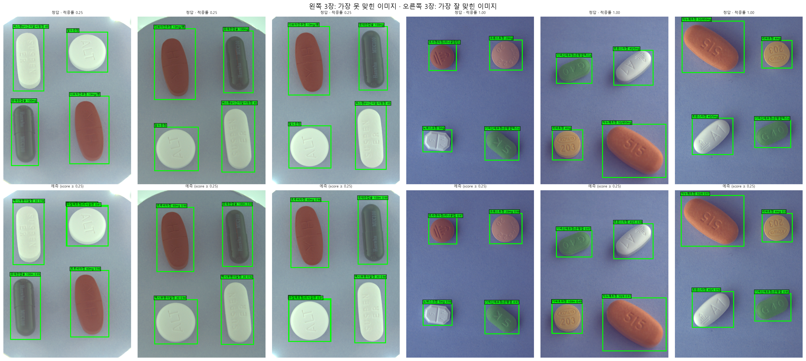
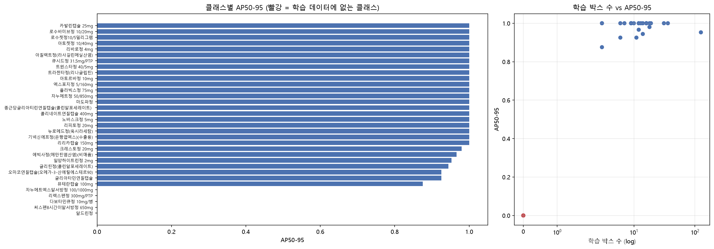
| 발견 | 근거 | 다음 결정 |
|---|---|---|
| 오류는 위치가 아니라 처음 보는 약의 이름 | 학습한 약 AP 0.985 / 처음 보는 약 5종 AP 0.000 | 위치와 이름을 나눠 푸는 2단계 모델 시도 |
| 처음 보는 약을 비슷한 약으로 확신 | 다보타민큐정 → 트루비타정 (신뢰도 0.96) | 희귀 약 보강 (Copy-Paste), 서비스 설계 시사점 (11장) |
| 이미지당 상위 4개 제한은 손해 | mAP50-95 0.835 → 0.822 | 가설 기각. 제출에는 모든 예측 유지 |
| ID | 변경 (E0 대비 하나만) | mAP50 | mAP50-95 | 학습 시간 | 판단 |
|---|---|---|---|---|---|
| E0 | 베이스라인 YOLO11s · 640px | 0.847 | 0.835 | 5.7분 | 기준 |
| E1 | 해상도 960px | 0.824 | 0.811 | 11.6분 | 하락 |
| E1 | 해상도 1280px | 0.837 | 0.830 | 41.3분 | 개선 없음, 7배 느림 |
| E2 | YOLO11n | 0.842 | 0.823 | 6.3분 | 하락 |
| E2 | YOLO11m | 0.847 | 0.839 | 30.8분* | 최고, 5-Fold 후보 |
| E2 | YOLO26s (최신 구조) | 0.828 | 0.810 | 4.3분 | 하락 |
| E3 | 상하 뒤집기 증강 | 0.847 | 0.833 | 5.3분 | 차이 없음 |
| E3 | 밝기 증강 강화 (hsv_v 0.4 → 0.6) | 0.847 | 0.837 | 5.6분 | +0.002, 판단 불가 |
강한 후보들의 mAP50이 0.847로 같다. fold 0 검증에는 학습에 없는 약이 5종 있어 이 분할에서 가능한 mAP50의 최댓값이 28/33 = 0.848이기 때문이다. 즉 fold 0에서는 이미 상한에 닿아 모델 간 차이가 드러나지 않는다. 남은 여지는 박스 정밀도(mAP50-95)와 데이터 전체 활용이므로, 다음 비교는 5-Fold로 옮겼다.
오류가 "이름"에서 나오므로 위치(알약 찾기)와 이름(약 판별)을 나눠, YOLO가 찾은 박스를 별도 분류기로 다시 판별하는 2단계 구조를 시도했다.
2단계 모델의 약 이름 판별기 후보를 같은 증강·학습 설정에서 구조만 바꿔 비교했다. 정답 박스를 잘라 학습한 약만으로 평가한 값이라 실제 검출 성능이 아니라 분류기 구성요소의 낙관적 진단값이다.
| 분류기 | 정확도 | F1 (macro) | log loss | 학습 시간 | 파라미터 |
|---|---|---|---|---|---|
| EfficientNet-B0 | 0.993 ± 0.008 | 0.994 ± 0.006 | 0.166 | 2.1분 | 4.1M |
| VGG16 | 0.993 ± 0.008 | 0.989 ± 0.015 | 0.153 | 5.5분 | 134.5M |
| ResNet50 | 0.992 ± 0.009 | 0.987 ± 0.015 | 0.217 | 2.1분 | 23.6M |
EfficientNet-B0을 골랐다. F1이 가장 높고 VGG16의 1/33 파라미터로 2.6배 빠르다. 그러나 YOLO 박스와 결합한 2단계 모델은 fold 0에서 0.832 ~ 0.834로 YOLO 단독(0.835)을 넘지 못했다. YOLO가 이미 학습한 약은 거의 다 맞히고 있어 분류기가 더할 여지가 없었고, 처음 보는 약은 분류기도 학습한 적이 없기 때문이다. 분류기를 바꾸는 것으로는 open-set 문제를 풀 수 없다는 것이 이 실험의 결론이다.
| 시도 | 결과 | 해석 |
|---|---|---|
| Copy-Paste 합성[6] 400장 | 0.823 (−0.012) | 이 설정만 기각. 합성이 원본(185장)의 2배를 넘어 합성 특유의 경계·배경을 학습했을 가능성. 비율을 낮춘 재실험 후보 |
| 2단계 (검출 + 분류기) | 0.832 ~ 0.834 | 6.3절. 학습한 약은 이미 맞히고, 처음 보는 약은 분류기도 모른다 |
| 1-클래스 검출기 (위치만) | 위치 0.939 | 56-클래스 YOLO의 위치 성능(클래스 무시 0.962)보다 낮다 → 클래스 정보가 위치 학습에도 도움 |
| 이미지당 상위 4개 제한 | 0.822 (−0.013) | mAP는 낮은 점수 예측까지 순위로 평가하므로, 잘라 내면 재현율을 잃는다 |
| CLAHE 전처리 | fold 2↑ 3↓ | 6.5절. 라벨 수정 전후 모두 개선이 불확실해 미채택 |
EDA에서 본 Train/Test 밝기 차이를 이미지마다 국소 대비를 평탄화하는 CLAHE[5]로 줄일 수 있는지 확인했다. 알약 색은 클래스를 가르는 단서이므로 LAB의 밝기 채널에만 적용했고, 설정값은 검증 점수로 고르지 않고 OpenCV 기본값(clip 2.0, tile 8×8)으로 고정했다. 학습·검증·테스트 모두 같은 함수를 거친다.
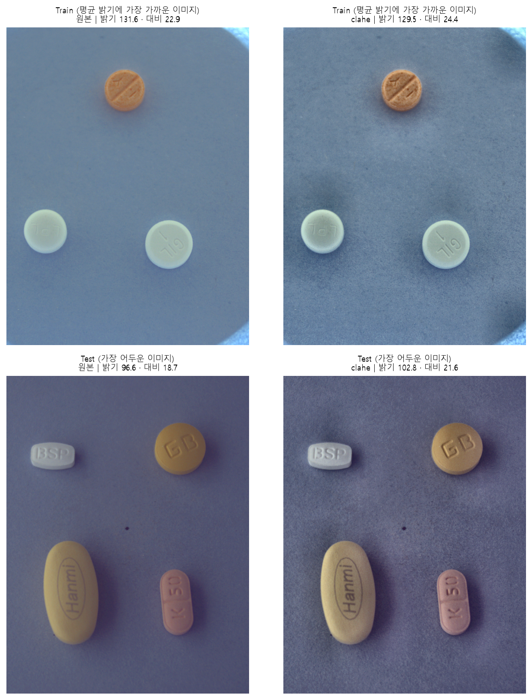
| 분포 (Test − Train) | 원본 | CLAHE |
|---|---|---|
| 밝기 차이 | −5.55 | −3.25 |
| 대비 차이 | +2.88 | +2.98 |
밝기 차이는 40% 줄었지만, 대비는 Train과 Test가 함께 커져 차이가 그대로였다.
부트스트랩 단위 – 같은 조합의 사진은 서로 독립이 아니다. 분할과 같은 단위인 조합 114개를 복원 추출(1000회)[11]해 두 실험의 차이를 짝지어 계산했다. 이미지 단위로 뽑으면 구간이 지나치게 좁아진다.
| YOLO11s 5-Fold | fold 0 / 1 / 2 / 3 / 4 | fold 평균 | 37종 조건부 OOF |
|---|---|---|---|
| 원본 | 0.836 / 0.900 / 0.936 / 0.763 / 0.879 | 0.8626 | 0.956 |
| CLAHE | 0.833 / 0.900 / 0.943 / 0.748 / 0.886 | 0.8618 | 0.962 |
| 차이 | 2개 fold 상승 · 3개 fold 하락 | −0.0008 | +0.005 95% 구간 −0.003 ~ +0.018 (개선 확률 88%) |
결정: 미채택. fold 단위로는 방향이 엇갈리고(처음 보는 약이 가장 많은 fold 3에서 −0.015), 합친 OOF의 개선도 구간이 0을 포함한다. 라벨을 고쳐 다시 학습해도 결론이 같았고, 대리지표로 다시 봐도 같았다 (37종 OOF +0.006, 구간 −0.005 ~ +0.020, 2개 fold 상승 · 3개 하락). 밝기 차이는 학습 중 HSV 증강이 이미 다루고 있어 전처리로 얻을 몫이 작았던 것으로 본다.
| 모델 | fold별 mAP50-95 (0 / 1 / 2 / 3 / 4) | fold 평균 ± 표준편차 | OOF 56종 | OOF 37종 (조건부) |
|---|---|---|---|---|
| YOLO11s | 0.836 / 0.900 / 0.936 / 0.763 / 0.879 | 0.863 ± 0.067 | 0.634 | 0.956 |
| YOLO11m | 0.837 / 0.900 / 0.924 / 0.732 / 0.884 | 0.855 ± 0.076 | 0.622 | 0.941 |
| WBF 11s + 11m (2:1, IoU 0.6) | – | – | 0.638 | 0.964 |
설정 선택 편향 점검 (근사 메타 검증) – WBF의 IoU 임계값과 모델 가중치 12개 조합 중 최댓값을 같은 OOF에서 고르면 낙관적이다. 그래서 fold 하나를 보류하고 나머지 4개 fold로 설정을 고른 뒤 보류 fold에만 적용하는 과정을 5번 반복했다. 가중치는 5번 모두 2:1이었다. 처음에는 mAP50-95로 평가해 IoU 0.7(3회)을 택했는데, 이때 전체 OOF의 0.6과 0.7은 0.9636으로 동률이었다. 대리지표로 같은 절차를 다시 돌리자 IoU는 0.6이 3번 · 0.7이 2번 뽑혔고 전체 OOF도 0.6이 근소하게 높아(0.9502 vs 0.9495), 최종 설정을 2:1, IoU 0.6으로 바꿨다. 차이가 작아 "0.6이 더 좋다"는 근거가 아니라 규칙을 따른 선택이다. 보류 예측 합산(대리지표 0.949)은 독립된 성능 추정치가 아니라 설정 안정성을 점검한 값이다.
라벨 수정 전에는 같은 절차가 1:1을 골랐다. 절차를 고정하고 결과를 따랐으며, 1:1과 2:1의 차이(0.002)는 결론을 바꿀 크기가 아니다.
다만 설정을 고를 때 쓴 다른 fold의 모델은 보류 fold를 학습에 포함했으므로 완전히 격리된 추정은 아니다. 엄밀한 nested CV는 보류 fold를 뺀 4개 fold 안에서 모델을 다시 학습해야 해, 저장된 예측만으로는 할 수 없다. 그래서 이 결과는 "설정 선택이 안정적인가"의 근거로만 쓴다.
학습률 (R11) – optimizer=auto가 실제로 고른 값(AdamW, lr0 0.000167)을 기준으로 학습률 하나만 바꿔 fold 0에서 비교했다.
판단 규칙은 실행 전에 설정 파일에 적어 두었다: "E0보다 0.005 이상 좋을 때만 5-Fold로 확인한다."
| 학습률 | fold 0 mAP50-95 | E0 대비 | 판단 |
|---|---|---|---|
| 0.000167 (auto, E0) | 0.8356 | – | 기준 |
| 0.0005 (3배) | 0.8381 | +0.0025 | 사전 기준(+0.005) 미달 → 5-Fold 생략 |
| 0.00005 (0.3배) | 0.8269 | −0.0087 | 하락 |
auto 값을 유지했다. fold 하나(독립 조합 23개)로는 0.005 이하의 차이를 구분할 수 없으므로, 3배의 +0.0025는 개선 근거로 쓰지 않는다. 배치 크기는 실험하지 않았다.
TTA (R14) – 다시 학습하지 않고, 이미 학습한 5-Fold 모델로 검증 예측만 TTA(좌우 뒤집기 + 0.83 · 0.67배 축소, Ultralytics 기본)로 다시 만들어
기준 예측과 짝지어 비교했다. fold k 모델은 fold k 이미지만 예측하므로 학습 때와 같은 누수 없는 OOF다 (scripts/predict_oof.py).
| 37종 조건부 OOF | TTA 없음 | TTA | 차이 (조합 부트스트랩 95% 구간) | fold별 | 개선 확률 |
|---|---|---|---|---|---|
| YOLO11s | 0.956 | 0.952 | −0.004 (−0.011 ~ +0.002) | 3개↑ 2개↓ | 9% |
| YOLO11m | 0.941 | 0.936 | −0.005 (−0.010 ~ +0.002) | 1개↑ 4개↓ | 11% |
결정: 미채택. 두 모델 모두 합친 OOF가 내려갔고 개선 확률은 10% 안팎이다. 대리지표로 다시 봐도 같았다 (37종 OOF 11s −0.007, 구간 −0.015 ~ +0.002, 3개 fold 상승 · 2개 하락, 개선 확률 7% / 11m −0.012, 구간 −0.018 ~ 0.000, 5개 fold 모두 하락, 개선 확률 3%). 고정된 카메라로 비슷한 크기의 알약을 찍은 데이터라 축소 변환이 학습 분포에 없는 크기를 만들고, 합쳐진 박스가 가장 엄격한 IoU에서 정밀도를 잃었을 수 있다 (확인하지 않은 가설).
최종 후보 모델은 232장 전체로 학습한다. 이때는 검증 데이터가 학습에 포함되므로 검증 점수로 가중치를 고를 수 없다. 검증을 끄고, 정해진 에포크만큼 학습한 마지막 가중치(last.pt)를 쓴다.
에포크는 fold별 최고 에포크의 중앙값으로 정했다 (수정 라벨 기준 YOLO11s 80/81/86/26/59 → 80, YOLO11m 80/90/50/44/80 → 80. 수정 전에는 50 · 83). 데이터가 fold 학습보다 25% 많고 학습률 스케줄이 총 에포크에 묶여 있어 최적이라는 보장은 없는 휴리스틱이다. 대신 fold별 학습 기록으로 민감도를 확인했다.
| 고정 에포크 후보 | YOLO11s: 최고점 대비 평균 손해 | YOLO11m: 최고점 대비 평균 손해 |
|---|---|---|
| P25 (59 / 50) | 0.006* | 0.011 |
| 중앙값 (80 / 80) | 0.003* | 0.001* |
| P75 (81 / 80) | 0.004* | 0.001* |
중앙값에서의 평균 손해는 0.003 이하지만, 이것은 80 에포크까지 학습한 4개 fold에서만 잰 참고값이다. 11s · 11m 모두 fold 3이 26~44 에포크에서 최고였다가 조기 종료되어 빠졌고, fold 학습은 100 에포크 학습률 스케줄인데 최종 학습은 80 에포크 스케줄이라 같은 에포크의 상태가 다르다. 그래서 이 표로 "최고점 주변이 평평하다"를 입증하지 않으며, 80 에포크는 최적값이 아니라 중앙값 휴리스틱으로만 채택했다. 처음 보는 약이 많은 분할에서는 더 짧은 학습이 나았을 수 있다.
| 제출 파일 | 구성 | 37종 조건부 OOF (대리지표) | Kaggle public |
|---|---|---|---|
| final_11s_11m_wbf_iou06 | YOLO11s + YOLO11m WBF (2:1, IoU 0.6) | 0.950 | 0.41349 |
| final_11s_11m_wbf | YOLO11s + YOLO11m WBF (2:1, IoU 0.7) | 0.950 | 0.41410 |
| final_yolo11s_single | YOLO11s 단일 | 0.938 | 0.40954 |
| final_yolo11m_single | YOLO11m 단일 | 0.922 | 0.39427 |
순위는 맞았고, 절댓값은 크게 어긋났다. 앙상블 > 11s > 11m 순서는 OOF와 같다. IoU 0.6과 0.7은 OOF(0.0007)와 public(0.0006) 모두 차이가 작고 방향은 반대라 구분되지 않는다. 미리 정한 대로 public 점수를 보고 주력을 바꾸지 않았다.
낮은 점수의 원인은 확정하지 못했다. 37종 값이 Kaggle 추정치가 아니라는 점은 이미 밝혔지만, 56종 전체 대리지표 0.628과 비교해도 public이 낮다. 테스트 정답이 비공개라 아래는 가설과 간접 근거다.
리더보드 비교 (11/05): 상위 4팀 0.611~0.634, 기준 제출 0.589로 이 프로젝트의 주력보다 약 0.2 높다. Public은 테스트의 약 50%만 반영한다.
놓친 개선 방향과 후속 실험: 대회 안내상 금지 파일 외의 AI Hub 데이터를 추가할 수 있었지만 제출 전에는 검토하지 않았다. 제출 뒤 허용된 조합 라벨(금지 묶음 제외 7묶음)을 분석하니 약 116종이었고, 대회 56종 중 54종이 겹치며 62종은 새 약이었다. 그중 1묶음(1,437장, 76클래스)을 더해 15 에포크만 시험 학습했더니 대회 fold 0의 mAP50-95가 0.835에서 0.937로 올랐다. fold 하나(47장)의 시험값이지만, Kaggle public도 같은 YOLO11s 단일 기준 0.40954에서 0.52212로 올랐다. 이 시험 제출은 후보가 아니며 위 표에 넣지 않았다. 전체 데이터 학습은 이 보고서 작성 시점에 진행 중이다. "테스트가 약 118종이고 격차의 대부분이 이 때문"이라는 설명은 아직 가설이다.
현재 최종 후보와 같은 구성(YOLO11s + YOLO11m, WBF 2:1, IoU 0.6)의 5-Fold OOF 예측 232장을 다시 나눠 보았다. 새로 학습한 것은 없다.
목적은 mAP 한 숫자 뒤에서 어디서 점수를 잃는지 찾는 것이다. 출처: scripts/error_analysis.py, reports/experiments/error_*.csv.
이 분석이 데이터를 고쳤다 – 처음 이 장을 썼을 때는 "학습한 약끼리도 신뢰도 0.96~0.98로 틀린다"는 결론이 있었다. 그 사례를 원본과 대조하자 4장 모두 모델이 맞고 라벨이 틀렸다 (보고서 3장 "데이터 정제"의 감사 D·E: D 3장 + E 1장). 라벨을 고쳐 전체를 다시 학습했고, 그 결론은 철회했다. 아래 수치는 모두 수정된 라벨 기준이다.
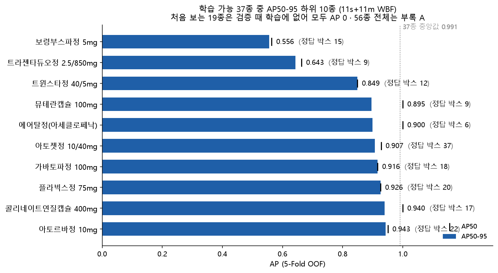
37종의 AP50-95 중앙값은 0.992이고, 28종은 AP50이 1.0이다. 0.9 미만은 4종뿐이다. 처음 보는 19종은 검증될 때 학습에 없어 18종이 0이다. 동아가바펜틴정만 0.100인데, 학습하지 않은 클래스 출력이 낸 신뢰도 0.003 미만의 예측 몇 개가 우연히 그 알약 위에 놓인 결과다 (누수 아님, 같은 fold에 이 약의 학습 박스 없음).
| AP 하위 (37종 안) | AP50-95 | AP50 | 정답 박스 | 검증 때 학습 박스 (평균) |
|---|---|---|---|---|
| 트라젠타듀오정 2.5/850mg | 0.636 | 0.636 | 9 | 4.0 |
| 보령부스파정 5mg | 0.751 | 0.775 | 15 | 8.4 |
| 에어탈정(아세클로페낙) | 0.883 | 1.000 | 6 | 3.0 |
| 아토르바정 10mg | 0.884 | 0.901 | 22 | 16.9 |
| 콜리네이트연질캡슐 400mg | 0.920 | 1.000 | 17 | 13.3 |
학습 박스 수와 AP 사이에는 단조 관계가 관찰되지 않았다 (Spearman ρ = −0.06, n = 37, 탐색적). 22박스나 있는 아토르바정도 하위권이다. 하위 약의 손실은 비슷하게 생긴 다른 약과의 혼동, 그리고 다른 약의 오탐에서 나왔다. 보령부스파정은 자기 박스 15개 중 11개를 맞혔지만, 처음 보는 약 5박스(아빌리파이정 3, 졸로푸트정 2)가 보령부스파정으로 예측되어 이 클래스의 오탐이 되었다. 처음 보는 약이 학습한 약의 AP까지 깎는 경로다.
| 37종 mAP | IoU 0.50 | 0.75 | 0.90 | 0.95 | 50-95 평균 | 75-95 평균 (대리지표) |
|---|---|---|---|---|---|---|
| YOLO11s | 0.975 | 0.972 | 0.947 | 0.832 | 0.956 | 0.938 |
| YOLO11m | 0.960 | 0.957 | 0.944 | 0.806 | 0.941 | 0.922 |
| WBF 11s + 11m (2:1, IoU 0.6) | 0.978 | 0.975 | 0.963 | 0.872 | 0.964 | 0.950 |
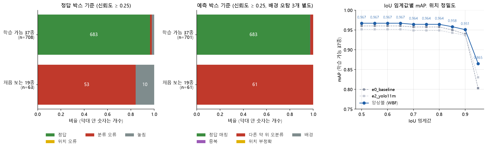
예측을 점수 순으로 하나씩 보며, 아직 배정되지 않은 정답 중 IoU가 가장 큰 것(IoU ≥ 0.5, 약 종류 무관)에 1:1로 배정했다. 같은 약이면 정답, 다른 약이면 분류 오류다. 남은 정답은 같은 약 예측이 0.1 ≤ IoU < 0.5로 겹치면 위치 오류, 아니면 놓침이다. 예측 하나가 겹친 두 정답에 동시에 쓰이지 않으며, 어느 정답과도 IoU < 0.1인 배경 오탐은 별도로 센다. 0.25는 Ultralytics 예측의 기본 신뢰도다. 고정 신뢰도에서 센 개수이므로 COCO mAP의 손실 분해가 아니다.
| 정답 박스 (신뢰도 ≥ 0.25) | 정답 | 위치 오류 | 분류 오류 | 놓침 |
|---|---|---|---|---|
| 학습 가능 37종 (708개) | 692 (97.7%) | 0 | 12 (1.7%) | 4 (0.6%) |
| 처음 보는 19종 (63개) | 0 | 0 | 61 (96.8%) | 2 (3.2%) |
| 37종, 신뢰도 ≥ 0.5 | 681 | 0 | 8 | 19 |
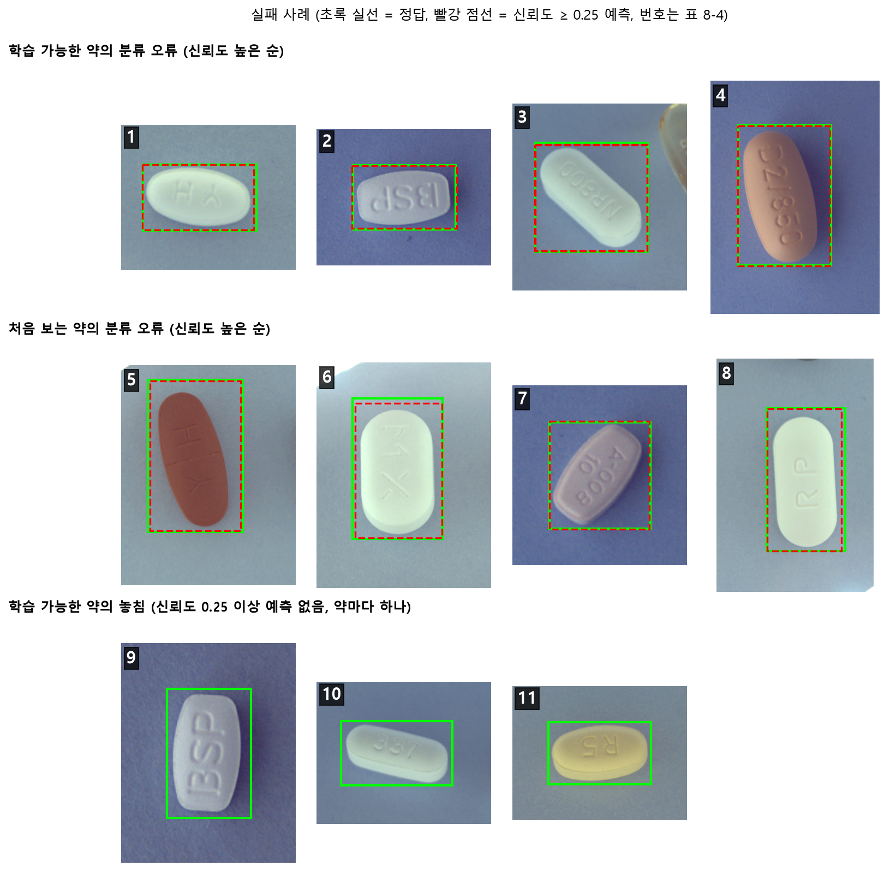
| 번호 | 유형 | 실제 약 | 예측 | 신뢰도 |
|---|---|---|---|---|
| 1 | 학습 약 분류 오류 | 아토르바정 10mg | 로수젯정 10/5mg | 0.82 |
| 2 | 학습 약 분류 오류 | 보령부스파정 5mg | 졸로푸트정 100mg | 0.81 |
| 3 | 학습 약 분류 오류 | 뉴로메드정 | 아토젯정 10/40mg | 0.62 |
| 4 | 학습 약 분류 오류 | 트라젠타듀오정 2.5/850mg | 울트라셋이알서방정 | 0.55 |
| 5 | 처음 보는 약 | 다보타민큐정 | 트루비타정 | 0.98 |
| 6 | 처음 보는 약 | 맥시부펜이알정 300mg | 리렉스펜정 300mg | 0.97 |
| 7 | 처음 보는 약 | 아빌리파이정 10mg | 보령부스파정 5mg | 0.97 |
| 8 | 처음 보는 약 | 리렉스펜정 300mg | 맥시부펜이알정 300mg | 0.96 |
| 9~11 | 학습 약 놓침 | 보령부스파정 · 아토젯정 · 로수젯정 | 신뢰도 0.25 미만 박스만 있음 | 0.09~0.17 |
| 정답 박스에 겹친 최고 신뢰도 | 학습 가능 37종 (708) | 처음 보는 19종 (63) |
|---|---|---|
| 중앙값 | 0.966 | 0.622 |
| 0.9 이상 비율 | 88.4% | 23.8% |
| 0.5 미만 비율 | 2.7% | 23.8% |
| 두 번째 이름도 0.25 이상인 비율 | 1.1% | 23.8% |
| AUROC (신뢰도가 낮을수록 처음 보는 약) | 0.884 (95% 구간 0.794 ~ 0.955, 조합 단위 부트스트랩 1000회) | |
신뢰도는 처음 보는 약에서 낮은 편이지만(AUROC 0.884), 처음 보는 약의 24%는 신뢰도 0.9 이상으로 다른 약이라고 답했다. 동일 OOF 표본에서 처음 보는 약의 90%를 거르는 탐색적 operating point를 잡으면 학습한 약 박스의 28%도 함께 거부된다 (그 점의 신뢰도 0.954. 같은 데이터로 고른 값이라 낙관적이며 운영값이 아니다). 이 수치는 WBF 설정에 민감하다. IoU 0.7에서는 같은 값이 30%, AUROC 0.842, 거부 55%였다. mAP가 거의 같은 두 설정에서 이만큼 달라지므로 표본 63박스의 불안정성을 고려해 방향만 읽어야 한다. 11장의 "신뢰도 임계값만으로는 부족하다"는 판단의 정량 근거다. 처음 보는 약이 63박스뿐이고 촬영 환경이 하나여서, 이 표로 운영 임계값을 정하지는 않는다.
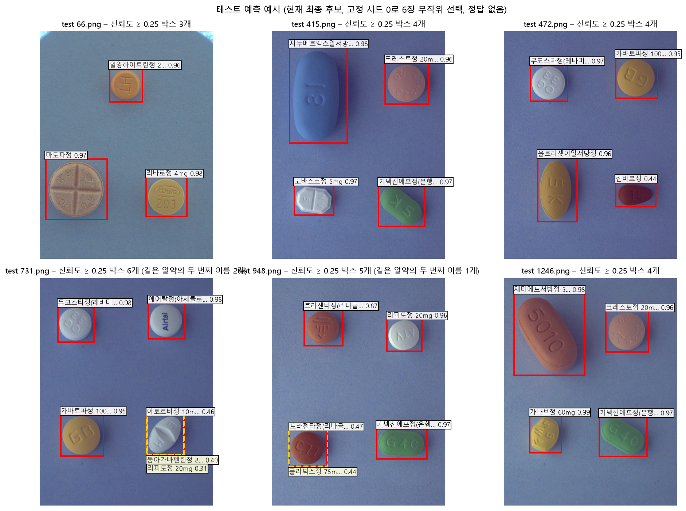
신뢰도 0.25 이상 박스를 IoU ≥ 0.5로 묶은 "한 알약"에 이름이 두 개 이상 붙은 비율은 OOF 3.0%(765묶음 중 23), 테스트 3.7%(3,124묶음 중 117)였다. 정답이 없어 테스트가 더 어렵다는 증거로 해석하지 않는다. 다만 정답 없이 계산할 수 있으므로, 서비스에서 "사용자 확인 필요" 사례의 빈도를 지켜보는 모니터링 후보 지표로 쓸 수 있다.
정리 – 현재 최종 후보는 학습한 약의 위치를 정확히 찾고(맞힌 박스의 IoU 중앙값 0.974), 학습한 약을 틀릴 때는 신뢰도가 낮다. 점수와 안전 모두에서 가장 큰 문제는 처음 보는 약에 높은 신뢰도로 다른 이름을 붙이는 것이다. 이번에 시험한 해상도 · 모델 크기 · crop 분류기 범위에서는 개선을 확인하지 못했다(6.1~6.3절). 닮은 약의 혼동은 이번에 시도한 고해상도 입력(6.1절)과 crop 분류기(6.3절)에서 개선이 확인되지 않아 남은 과제로 둔다(12장).
노트북은 분석과 해석을, 공통 코드는 src/pilldet/ 패키지가 맡는다. 노트북과 스크립트가 같은 함수를 불러 쓰므로 결과가 어긋나지 않는다.
| 구성 | 역할 |
|---|---|
src/pilldet/ (17개 모듈) | 경로 탐색, 라벨 정제, 조합 단위 분할, YOLO/COCO 변환, 학습, 예측, COCO 평가, WBF 직접 구현, 전처리, 제출 파일 검사 |
scripts/ | 데이터 준비, 실험 실행(--fold, --skip-train), 5-Fold 집계, OOF 분석, 오류 분석, 짝지은 비교, 에포크 민감도, 제출 생성 |
configs/ | 실험 하나 = 설정 파일 하나. 베이스라인에서 값 하나만 바꾼 파일들 |
tests/ | 단위 테스트 함수 40개 (매개변수 포함 42개 케이스): 좌표 변환, 분할 누수, 평가, 실패 유형 분류, WBF, 제출 형식, 전처리 일치, 라벨 검수 결정 적용 · 형식 · 의미 검사, 감사 출처 해시, 콘솔 인코딩, 검사 로직 |
args.yaml)이 다르면 멈춘다. TTA 재예측도 fold 모델이 그 fold의 데이터로 학습됐는지 확인한 뒤 실행한다.pip install -r requirements.txt python scripts/prepare_data.py # 정제 · 변환 · 5-Fold 분할 python scripts/run_experiment.py --config configs/e0_baseline.yaml [--fold k] python scripts/summarize_cv.py e0_baseline e2_yolo11m python scripts/analyze_oof.py e0_baseline e2_yolo11m python scripts/run_experiment.py --config configs/final_yolo11s.yaml # final_yolo11m도 같은 방식 python scripts/make_submission.py --runs final_yolo11s final_yolo11m --weights 2 1 --iou-thr 0.6 --name final_11s_11m_wbf_iou06
GPU 학습은 cuDNN 비결정성 때문에 같은 시드에서도 가중치가 비트 단위로 같지 않을 수 있다. 재현 기준은 5-Fold 점수가 소수 셋째 자리 수준에서 같은 것이다.
실행 환경 혼재 가능성: 설치된 pandas · Pillow가 10/30 09:34경(설치 폴더 시각) 3.0.3 · 12.3.0에서 2.3.3 · 11.3.0으로 바뀐 것으로 보이며, 원인은 확인하지 못했다. 산출물 시각 기준으로 e0_baseline fold 0(09:28 완료)과 라벨 수정 전 탐색은 이전 버전, fold 1(09:37 완료)은 교체 시점에 걸쳐 있고, 나머지 5-Fold · 최종 모델 · 제출 · 테스트는 이후 버전이다. fold별 환경을 기록하지 않아 시각으로 추정한 것이다. 두 라이브러리의 차이가 점수에 영향을 줬는지는 재실행으로 검증하지 않았다. requirements.txt는 최종 모델을 만든 환경의 버전이다. 새 가상환경(같은 PC, Python 3.14.6, CPU용 PyTorch)에 requirements.txt를 설치해 의존성 검사와 단위 테스트 37개, 라벨 감사 재현을 확인했다. 다른 PC와 GPU 학습 재현은 확인하지 않았다.
매일 업무일지(docs/worklog/)에 할 일 · 한 일 · 인사이트 · 고민 · 못 한 일을 남겼고, 모든 변경은 Git 커밋으로 추적된다.
요구사항 17개(R1~R17)를 첫날 추적표(docs/PLAN.md)로 만들어 일정에 배치했다 (최종 충족 상태는 부록 B).
| 날짜 | 한 일 | 주요 산출물 |
|---|---|---|
| 10/27 (화) | EDA, 라벨 정제 A~C, 조합 단위 5-Fold, 파이프라인 모듈화·테스트, 베이스라인과 E1~E3 탐색, 분류기 3종·2단계, WBF 직접 구현, 11s·11m 5-Fold, 최종 모델·제출 후보 | 01_eda, 02_preprocess, 03_baseline, src/pilldet, 제출 후보 3종 |
| 10/28 (수) | 리뷰 반영(근사 메타 검증, 에포크 민감도, OOF 완전성·설정 스냅샷 검사), CLAHE 5-Fold 비교, 보고서 구성안 | wbf_meta_validation.csv, compare_oof.py |
| 10/29 (목) | 보고서 초안과 리뷰 반영, 결과 분석(클래스별 AP · 실패 유형 · 처음 보는 약과 신뢰도), 실패 유형 1:1 매칭으로 재작성 | error_analysis.py, 보고서 초안 |
| 10/30 (금) | 원본 라벨 오류 4장 발견·수정(감사 D·E) → 5-Fold·최종 모델 전체 재학습, CLAHE 재검증, 학습률(R11)·TTA(R14) 실험, 데모 앱, 보고서 완성 | audit_labels.py, label_review.csv, 데모 앱, 보고서 |
| 11/02 주 | 대회 지표 · 제출 형식 확인과 재평가, 시연 영상, GitHub 반영, 저장소 · 보고서(11/05 19:00), 업무일지 · Kaggle(11/06 23:50) | Kaggle 점수 (주력 0.413), 시연 영상 |
단계마다(설계 → 중간 결과 → 완성본) 외부 리뷰를 받고, 지적을 그대로 받아들이지 않고 코드·데이터로 다시 확인한 뒤 고쳤다. 결론을 바꾼 주요 사례:
| 지적 · 발견 | 확인 | 조치 |
|---|---|---|
| WBF 설정을 같은 OOF에서 골라 최댓값을 보고 | 선택 편향이 맞다 | 근사 메타 검증 추가, 한계("완전 격리 아님") 명시 |
| "37종 OOF가 Kaggle 점수에 가깝다" | 희귀 19종을 뺀 값이라 과장 | "조건부 진단값"으로 용어 통일 |
| OOF 집계가 파일 존재만 확인 | 누락·중복 행도 통과했다 | 완전성 검사로 멈추게 하고 테스트 추가 |
| "모든 조합을 세 각도로 촬영" | 조합당 1~3장이었다 | README·보고서 정정 |
| "모르는 약은 신뢰도로 거부" | 0.96 오답 사례와 모순 | 신뢰도 단독 불충분, 운영 임계값 미제시로 정정 |
| 실패 유형 집계가 예측을 여러 정답에 재사용 | 맞다 (4건 차이) | 점수 순 1:1 매칭 + 회귀 테스트 |
| 그 4건을 추적하다 원본 라벨 오류 4장 발견 | 다른 각도 사진과 대조해 확정 | 감사 D·E 추가, 라벨 수정, 전체 재학습, "학습한 약끼리 고신뢰 오분류" 결론 철회 |
| CLAHE 차이(−0.0015)가 결론 여유보다 작음 | 재학습 뒤 다시 확인 필요 | 수정 라벨로 5-Fold 재검증 → 같은 결론 (6.5절) |
개인 사정으로 팀 프로젝트에서 개인 프로젝트로 전환되어 별도 발표 순서는 없다. 발표일에는 출석해 다른 팀 발표를 듣는다.
대신 (1) 데모 앱 시연 영상(docs/demo/demo.mp4, README에 링크), (2) 주강사와의 1:1 진행 공유를 발표 참여의 근거로 남긴다.
현재 최종 후보와 같은 구성(WBF 2:1, IoU 0.6)의 OOF. "19종"은 한 fold에만 있어 검증될 때 항상 학습에 없는 약이다. "학습 박스"는 그 약이 검증될 때 나머지 fold에 있던 같은 약 박스 수의 평균. 출처: reports/experiments/error_per_class.csv
| 약 이름 | 코드 | 그룹 | AP50-95 | AP50 | 정답 | 조합 | 학습 박스 |
|---|---|---|---|---|---|---|---|
| 노바스크정 5mg | 19861 | 37종 | 1.000 | 1.000 | 6 | 2 | 3.0 |
| 리바로정 4mg | 29667 | 37종 | 1.000 | 1.000 | 18 | 9 | 8.6 |
| 리피로우정 20mg | 22074 | 37종 | 1.000 | 1.000 | 16 | 9 | 11.9 |
| 리피토정 20mg | 16232 | 37종 | 1.000 | 1.000 | 21 | 11 | 15.3 |
| 무코스타정(레바미피드)(비매품) | 3544 | 37종 | 1.000 | 1.000 | 6 | 2 | 3.0 |
| 스토가정 10mg | 19607 | 37종 | 1.000 | 1.000 | 6 | 2 | 3.0 |
| 아질렉트정(라사길린메실산염) | 31863 | 37종 | 1.000 | 1.000 | 12 | 9 | 9.5 |
| 엑스포지정 5/160mg | 20877 | 37종 | 1.000 | 1.000 | 12 | 4 | 7.5 |
| 종근당글리아티린연질캡슐(콜린알포세레이트) | 18357 | 37종 | 1.000 | 1.000 | 13 | 9 | 10.3 |
| 큐시드정 31.5mg/PTP | 25438 | 37종 | 1.000 | 1.000 | 6 | 2 | 3.0 |
| 크레스토정 20mg | 16262 | 37종 | 1.000 | 1.000 | 23 | 11 | 17.2 |
| 트라젠타정(리나글립틴) | 28763 | 37종 | 1.000 | 1.000 | 9 | 3 | 6.0 |
| 기넥신에프정(은행엽엑스)(수출용) | 3483 | 37종 | 0.997 | 1.000 | 45 | 15 | 35.6 |
| 일양하이트린정 2mg | 3351 | 37종 | 0.996 | 1.000 | 157 | 89 | 125.5 |
| 로수바미브정 10/20mg | 38162 | 37종 | 0.993 | 1.000 | 18 | 10 | 13.7 |
| 에빅사정(메만틴염산염)(비매품) | 13900 | 37종 | 0.993 | 1.000 | 15 | 7 | 12.0 |
| 자누메트정 50/850mg | 25367 | 37종 | 0.993 | 0.993 | 12 | 4 | 9.0 |
| 카발린캡슐 25mg | 41768 | 37종 | 0.993 | 1.000 | 16 | 9 | 12.6 |
| 뉴로메드정(옥시라세탐) | 3832 | 37종 | 0.992 | 0.992 | 20 | 10 | 14.7 |
| 리리카캡슐 150mg | 18147 | 37종 | 0.992 | 1.000 | 15 | 9 | 11.6 |
| 마도파정 | 20014 | 37종 | 0.992 | 1.000 | 17 | 9 | 13.3 |
| 글리아타민연질캡슐 | 32310 | 37종 | 0.988 | 1.000 | 15 | 9 | 11.9 |
| 플라빅스정 75mg | 20238 | 37종 | 0.988 | 1.000 | 20 | 11 | 15.7 |
| 트윈스타정 40/5mg | 27733 | 37종 | 0.986 | 1.000 | 12 | 4 | 4.5 |
| 자누비아정 50mg | 22347 | 37종 | 0.978 | 0.978 | 9 | 3 | 6.0 |
| 글리틴정(콜린알포세레이트) | 33880 | 37종 | 0.972 | 1.000 | 17 | 9 | 13.1 |
| 가바토파정 100mg | 16548 | 37종 | 0.967 | 1.000 | 18 | 6 | 13.0 |
| 오마코연질캡슐(오메가-3-산에틸에스테르90) | 16688 | 37종 | 0.967 | 1.000 | 8 | 7 | 6.2 |
| 아모잘탄정 5/100mg | 25469 | 37종 | 0.966 | 0.978 | 12 | 4 | 4.5 |
| 로수젯정10/5밀리그램 | 36637 | 37종 | 0.963 | 0.977 | 19 | 10 | 13.6 |
| 아토젯정 10/40mg | 35206 | 37종 | 0.935 | 0.942 | 37 | 16 | 28.9 |
| 뮤테란캡슐 100mg | 2483 | 37종 | 0.928 | 1.000 | 9 | 3 | 4.0 |
| 콜리네이트연질캡슐 400mg | 19232 | 37종 | 0.920 | 1.000 | 17 | 9 | 13.3 |
| 아토르바정 10mg | 21325 | 37종 | 0.884 | 0.901 | 22 | 10 | 16.9 |
| 에어탈정(아세클로페낙) | 4543 | 37종 | 0.883 | 1.000 | 6 | 2 | 3.0 |
| 보령부스파정 5mg | 1900 | 37종 | 0.750 | 0.775 | 15 | 5 | 8.4 |
| 트라젠타듀오정 2.5/850mg | 30308 | 37종 | 0.636 | 0.636 | 9 | 3 | 4.0 |
| 약 이름 | 코드 | 그룹 | AP50-95 | AP50 | 정답 | 조합 | 학습 박스 |
|---|---|---|---|---|---|---|---|
| 동아가바펜틴정 800mg | 16551 | 19종 | 0.100 | 0.200 | 3 | 1 | 0.0 |
| 놀텍정 10mg | 24850 | 19종 | 0.000 | 0.000 | 3 | 1 | 0.0 |
| 다보타민큐정 10mg/병 | 12778 | 19종 | 0.000 | 0.000 | 6 | 2 | 0.0 |
| 라비에트정 20mg | 21771 | 19종 | 0.000 | 0.000 | 3 | 1 | 0.0 |
| 레일라정 | 29451 | 19종 | 0.000 | 0.000 | 3 | 1 | 0.0 |
| 리렉스펜정 300mg/PTP | 12081 | 19종 | 0.000 | 0.000 | 3 | 1 | 0.0 |
| 맥시부펜이알정 300mg | 22362 | 19종 | 0.000 | 0.000 | 3 | 1 | 0.0 |
| 비모보정 500/20mg | 29345 | 19종 | 0.000 | 0.000 | 6 | 2 | 0.0 |
| 신바로정 | 33009 | 19종 | 0.000 | 0.000 | 3 | 1 | 0.0 |
| 써스펜8시간이알서방정 650mg | 13395 | 19종 | 0.000 | 0.000 | 3 | 1 | 0.0 |
| 아빌리파이정 10mg | 12247 | 19종 | 0.000 | 0.000 | 3 | 1 | 0.0 |
| 알드린정 | 3743 | 19종 | 0.000 | 0.000 | 3 | 1 | 0.0 |
| 에스원엠프정 20mg | 33208 | 19종 | 0.000 | 0.000 | 3 | 1 | 0.0 |
| 울트라셋이알서방정 | 27926 | 19종 | 0.000 | 0.000 | 3 | 1 | 0.0 |
| 자누메트엑스알서방정 100/1000mg | 31885 | 19종 | 0.000 | 0.000 | 3 | 1 | 0.0 |
| 제미메트서방정 50/1000mg | 34597 | 19종 | 0.000 | 0.000 | 3 | 1 | 0.0 |
| 졸로푸트정 100mg | 27993 | 19종 | 0.000 | 0.000 | 3 | 1 | 0.0 |
| 카나브정 60mg | 27777 | 19종 | 0.000 | 0.000 | 3 | 1 | 0.0 |
| 트루비타정 60mg/병 | 19552 | 19종 | 0.000 | 0.000 | 3 | 1 | 0.0 |
| # | 요구사항 | 충족 근거 | 상태 |
|---|---|---|---|
| R1 | 요구사항 분석·타임라인 | docs/PLAN.md 추적표·일정 (10.1절) | 완료 |
| R2 | 업무일지 | docs/worklog/ 10/27~11/05 | 진행 |
| R3 | 개발 환경·GitHub·구조 | 레포, requirements.txt, 모듈 구조 (9장). 최종 반영은 11/02 주 | 완료 |
| R4 | EDA | 발견 6개 → 결정 (2장) | 완료 |
| R5 | 파일 구조·메타데이터 확인 | 파일명 ↔ 라벨 대조, 무결성 검사, 라벨 감사 A~E, 라벨 오류 15건 수정 (보고서 3장) | 완료 |
| R6 | 전처리 | 해상도 640/960/1280 (6.1절), CLAHE 5-Fold 전후 비교 (6.5절) | 완료 |
| R7 | 데이터 증강 | 상하 뒤집기·밝기·Copy-Paste 전후 비교 (6.1·6.4절) | 완료 |
| R8 | 파이프라인 자동화 | src/pilldet 17개 모듈, 스크립트, 테스트 함수 40개 (9장) | 완료 |
| R9 | VGG·ResNet·YOLO 등 모델 | YOLO11n·s·m·YOLO26s, VGG16·ResNet50·EfficientNet-B0 (6.1·6.3절) | 완료 |
| R10 | 성능 지표 비교 | 검출 mAP50/50-95, 분류 정확도·정밀도·재현율·F1·log loss (6장) | 완료 |
| R11 | 하이퍼파라미터 튜닝 | 학습률 3수준, 해상도, 모델 크기, 에포크 민감도 (6.7·7.1절). 배치 크기는 미실험 | 완료 |
| R12 | 인식 결과 시각화 | 정답 vs 예측, 실패 사례, 테스트 예측 (5.3·8장) | 완료 |
| R13 | 추가 전처리·외부 데이터 | 금지 데이터 2종 미사용 확인. 허용된 추가 AI Hub 데이터와 테스트 의사 라벨은 쓰지 않았다 | 부분 |
| R14 | 기타 성능 개선 기법 | WBF 직접 구현·근사 메타 검증, 5-Fold, TTA (6.6·6.7절) | 완료 |
| R15 | 분석 보고서 | 이 보고서 | 완료 |
| R16 | 시연 영상 | 데모 앱 app/demo.py, 영상 docs/demo/demo.mp4 (실행 화면 캡처 + 자막, 음성 없음). 업로드 기능은 앱에 있으나 영상에서는 테스트 이미지 선택만 보여 준다 | 부분 |
| R17 | Kaggle 제출 | 후보 4종 제출 완료, 주력 public 0.41349 (7.2절) | 완료 |